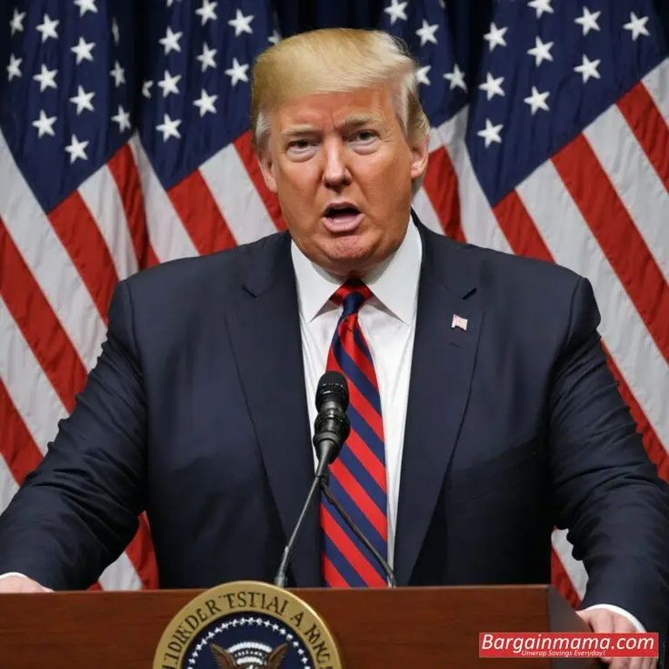
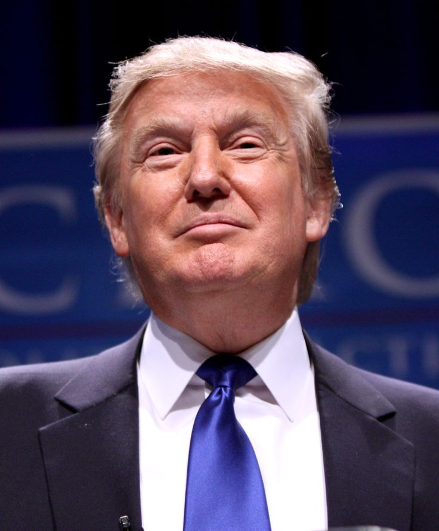

O presidente dos Estados Unidos, Donald Trump, assinou nesta quarta-feira (30) uma Ordem Executiva impondo uma tarifa adicional de 40% sobre os produtos importados do Brasil, elevando a tarifa total para 50%. A medida entra em vigor em 6 de agosto de 2025 e foi justificada pela Casa Branca como resposta a ações do governo brasileiro que, segundo ela, representam uma ameaça incomum e extraordinária à segurança nacional, à política externa e à economia dos EUA.

O governo norte-americano alegou que o Brasil tem adotado práticas comerciais desleais e que a perseguição judicial contra o ex-presidente Jair Bolsonaro configura uma violação dos direitos humanos e uma ameaça ao Estado de Direito. Além disso, a Casa Branca afirmou que o Brasil tem prejudicado empresas americanas e censurado plataformas de mídia social dos EUA, afetando a liberdade de expressão
O governo brasileiro reagiu com veemência à decisão dos EUA. O presidente Luiz Inácio Lula da Silva qualificou as tarifas como uma "chantagem inaceitável" e anunciou que o Brasil recorrerá à Organização Mundial do Comércio (OMC) para contestar a medida. Além disso, o país está preparando retaliações comerciais, incluindo a aplicação de tarifas sobre produtos americanos
A imposição das tarifas pode resultar em demissões nos setores afetados, aumento de preços nos EUA e uma possível desaceleração econômica no Brasil. Além disso, a medida agrava a crise diplomática entre os dois países, que já estava tensa devido a questões políticas internas brasileiras.
Avançar